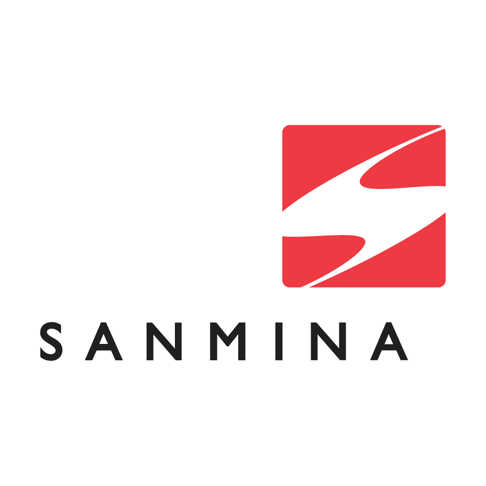

Hi, My name is Neelmani Bhardwaj
and I am a passionate

Work Experience

Alstom- Elrctromechanical Technician
(2021-2022)
- Implemented troubleshooting protocols and effectively resolved hardware and software issues on manufacturing equipment, ensuring uninterrupted production processes.
- Proficiently utilized diagnostic tools and techniques to identify and rectify technical malfunctions,minimizing downtime and maximizing equipment uptime.
- Collaborated with cross-functional teams to develop and implement preventive maintenance schedules, resulting in a significant reduction in equipment failures and associated costs.
- Conducted comprehensive training sessions on equipment operation and maintenance best practices,enhancing team members' technical proficiency and productivity levels.

Sanmina- Elrctromechanical Technician
(2022-2023)
- Resolved technical issues: Identified and efficiently resolved complex technical issues to minimize downtime andensure optimal system performance.
- Managed inventory and installations: Updated and maintained hardware and software inventory,conducting routine installations and upgrades for seamless operations.
- Utilized ticketing systems: Effectively managed equipment support and maintenance tasks using ticketing systems, streamlining issue tracking and resolution processes.
- Generated detailed test reports: Created comprehensive test reports using HTML and Excel,enhancing quality assurance and testing procedures
Loblaw- Frontend Supervisor
(2020-present)
- Implemented effective merchandise control measures, reducing inventory shrinkage by 15% within the first year of tenure.
- Conducted regular inspections of store facilities and equipment, identifying and addressing safety hazards proactively, resulting in a 20% decrease in workplace accidents.
- Managed cash handling procedures, resulting in a 10% reduction in cash discrepancies and improved financial accountability.